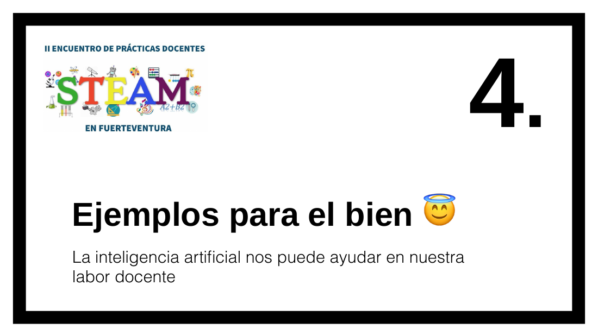

Ejemplos para el bien 😇

Notas del ponente
Algunos ejemplos de IA basadas en transformer son:
GPT (Generative Pre-trained Transformer): un modelo de lenguaje que ha sido pre-entrenado en una gran cantidad de datos para generar texto coherente y relevante.
BERT (Bidirectional Encoder Representations from Transformers): un modelo de lenguaje pre-entrenado que se ha utilizado en aplicaciones de NLP como el análisis de sentimientos y la clasificación de texto.
T5 (Text-to-Text Transfer Transformer): un modelo de lenguaje que se ha pre-entrenado en una variedad de tareas de NLP y puede realizar una amplia gama de tareas de procesamiento de lenguaje natural.
RoBERTa (Robustly Optimized BERT Pretraining Approach): una versión mejorada del modelo BERT que utiliza técnicas de pre-entrenamiento adicionales para mejorar su rendimiento.
XLNet (eXtreme Language understanding NETwork): un modelo de lenguaje que utiliza un enfoque de pre-entrenamiento sin supervisión que permite que la red considere todas las posibles permutaciones de las palabras en el texto de entrada.
Estos son solo algunos ejemplos de las numerosas IA basadas en transformer que existen actualmente en el campo de la inteligencia artificial y el procesamiento del lenguaje natural.